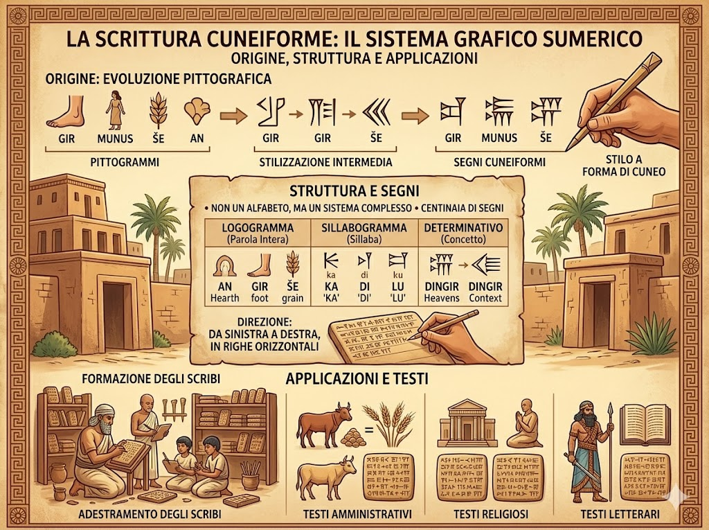

La storia della lingua sumera ha origine nella Mesopotamia meridionale, nella regione compresa tra i fiumi Tigri ed Eufrate, dove sorsero alcune delle prime città della storia, come Ur e Uruk. Inizialmente parlata dalle popolazioni sumere come lingua locale, il sumero si affermò progressivamente come lingua della vita urbana, dell’amministrazione e della religione. Grazie allo sviluppo della scrittura cuneiforme, fu utilizzato per redigere testi economici, leggi, inni e opere letterarie. Con l’espansione dell’influenza culturale delle città sumere, la lingua si diffuse in diverse aree della Mesopotamia, diventando un importante mezzo di comunicazione e cultura. Anche dopo il declino politico dei Sumeri e l’ascesa di altri popoli, come gli Accadi, il sumero continuò a essere utilizzato come lingua sacra, letteraria e scolastica per molti secoli. Nel tempo cessò di essere parlato nella vita quotidiana, ma rimase fondamentale nella tradizione culturale mesopotamica, lasciando un’eredità duratura nella storia della scrittura e della civiltà antica.
Il sumero, pur non essendo più una lingua parlata da millenni, ha lasciato un’eredità significativa nella storia della civiltà e, indirettamente, nella società contemporanea. Considerata una delle prime lingue scritte, il sumero fu alla base dello sviluppo della scrittura cuneiforme, un’invenzione che rese possibile la registrazione di leggi, testi religiosi, opere letterarie e documenti amministrativi. Questo progresso rappresentò un passaggio fondamentale per l’organizzazione delle società complesse. Oltre all’importanza linguistica, il sumero influenzò profondamente la cultura mesopotamica: miti, racconti epici e modelli giuridici elaborati dai Sumeri furono ripresi e trasmessi dai popoli successivi. Molti elementi della tradizione letteraria e religiosa del Vicino Oriente antico derivano infatti dall’esperienza sumera. La sua eredità si manifesta quindi soprattutto nell’ambito storico e culturale, poiché contribuì alla nascita della scrittura, dell’amministrazione statale e delle prime forme di legislazione, elementi che costituiscono le basi delle civiltà successive e, in ultima analisi, della società moderna.
Il sistema di scrittura della lingua sumera è la scrittura cuneiforme, uno dei più antichi sistemi grafici della storia. Nacque in Mesopotamia intorno alla fine del IV millennio a.C. come sistema di segni pittografici, che nel tempo si trasformarono in simboli stilizzati impressi sull’argilla con uno stilo a forma di cuneo. Questo metodo fu adottato dai Sumeri per registrare la lingua sumera e successivamente utilizzato anche da altri popoli della regione. La scrittura cuneiforme non era un alfabeto come quello latino, ma un sistema composto da centinaia di segni, che potevano rappresentare parole intere, sillabe o concetti. I segni venivano incisi su tavolette d’argilla disposti in righe orizzontali e, con il tempo, la scrittura si stabilizzò da sinistra a destra. La sua struttura complessa richiedeva una lunga preparazione degli scribi, ma rese possibile la redazione di testi amministrativi, religiosi e letterari, contribuendo in modo decisivo allo sviluppo delle prime civiltà urbane.
